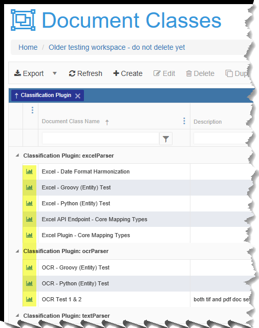
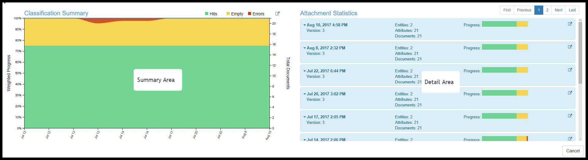
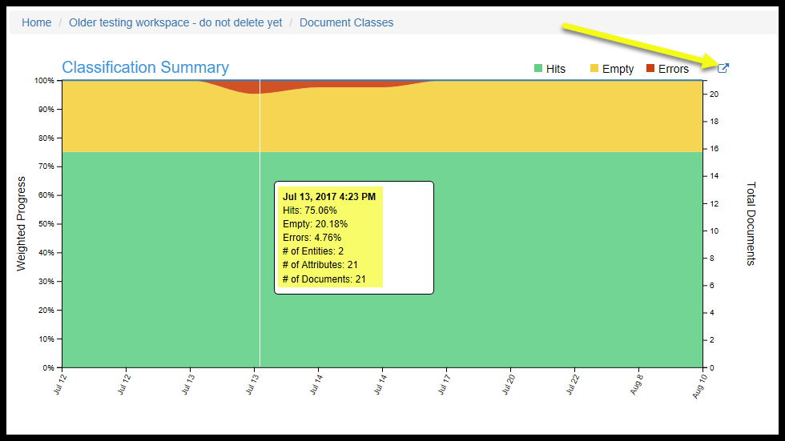
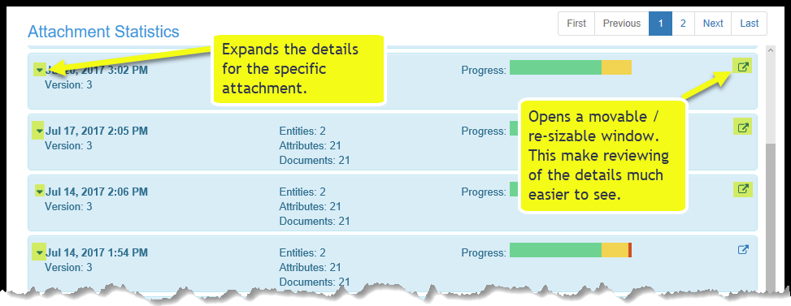
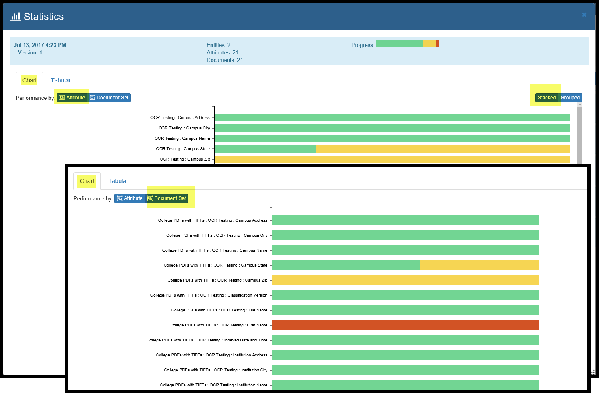
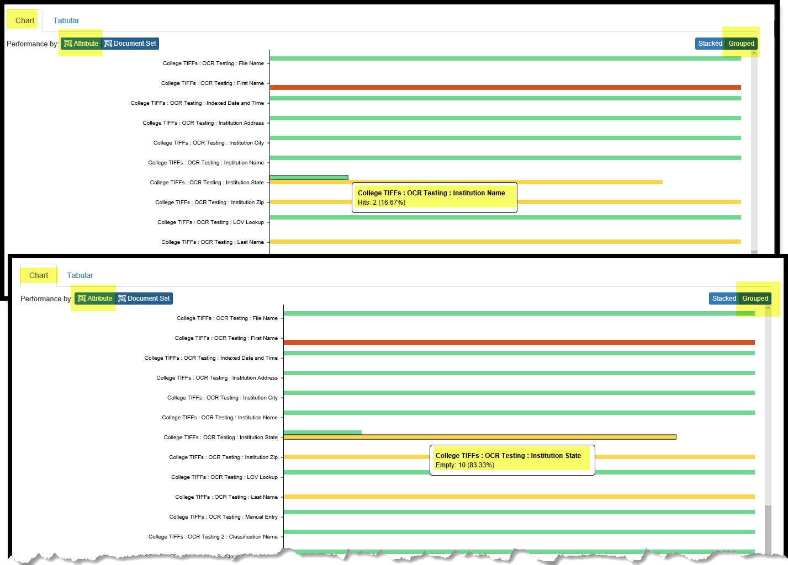
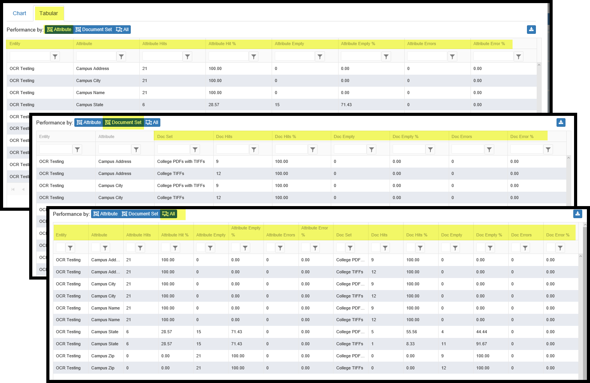
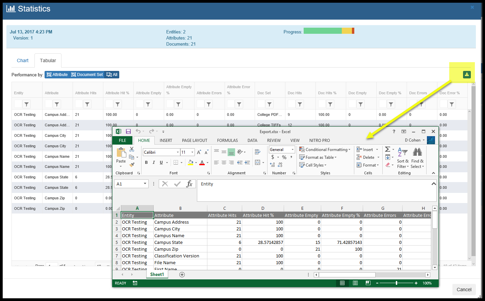

Classification Statistics
- Introduction
- Classification Summary
- Attachment Statistics
- Additional Screen changes for Classification Statistics
Introduction
During the ‘Attach’ process for any Document Classification, statistics are captured. These statistics can be accessed by clicking the leftmost icon in the Document Class grid.

There are two main areas: Classification Summary and Attachment Statistics.

Classification Summary
This is a time-series chart showing trends of key information for each Attachment that was completed. Two Attaches are required for a trend to appear. If only one Attach has been run, data points for that date/time will appear.
As seen below, Percentages of Mapping Hits, Empties, Errors, the number of documents processed and the number of Target Entities involved over time are calculated and shown in a popup as you mouse over the chart. Each Attach serves as a point on the x-axis.
The yellow arrow is showing a button that will open up the chart in its own popup.

Attachment Statistics

Each time an Attach is run, the detailed statistics captured are organized into tile. These attachment specific statistics can be viewed both graphically and in tabular form. The information in the tabular form can be downloaded into an Excel © spreadsheet for management reporting
Each of these two sections can pop-up into their own windows and be moved and resized as needed to see details more clearly.
Charting Statistics options
Below, we have opened up the statistics for Jul 13, 2017 and made it a bit bigger.
- Movement is done by left-click and hold and drag on the blue topmost part of the window.
- Re-sizing is done by clicking in the shaded area at the bottom-right of the window.

We can see that we are looking at the Charting option for the Attachment Statistics.
The legends is: Green means populated, Yellow means empty and Red means there is an error.
We have a few choices here:
- We can look at the graph sorted by Target Entity / Attributes or we can add in the name of the source Document Set.
- We can look at the bar graph either Stacked or Grouped:
- Stacked means that each Attribute takes up on row.
- Grouped means that each Attribute will have a separate row for Green, Yellow, Red (if applicable).
Moving your cursor over any part of the graph row pops up information about that piece of the chart.

Tabular Statistics options
Information can also be displayed in a tabular fashion and downloaded to Excel as desired.
Below you can see that the tabular option include a focus on:
- Target/Entity Statistics
- Document Set Statistics or
- All Statistics

There is also a Download button for taking the current tabular display and downloading it to a spreadsheet.

Additional Screen changes for Classification Statistics
The Attribute Preview tab in Document Classes now has an option to Show Statistics. This option will show, at the attribute level, the % Hits, % Empty and % Error.
Note: Empty columns may or may not indicate a problem with the mapping as blanks or ‘nulls’ can be valid output.